Participation
从观看到参与
用户不再只能评论或选择固定按钮，而是可以用自然语言表达判断，并让表达进入剧情系统。
本文档从用户洞察、产品方案、AI 原生能力、落地可行性与商业化路径出发，说明如何把线性视频升级为可对话、可探索、可影响剧情的互动叙事体验。
荒岛求生 是一款面向沉浸式互动叙事的原型产品。它结合 AI 大模型、三维视差感知、实时语音交互与可视化创作工具，让用户从“观看故事”转向“参与故事”。
用户不再只能评论或选择固定按钮，而是可以用自然语言表达判断，并让表达进入剧情系统。
通过摄像头识别视角变化，画面可根据头部移动产生视差，让用户主动观察环境细节。
创作者可以用低门槛编辑工具搭建互动剧情、配置分支逻辑，并借助 AI 生成内容素材。
内容消费正在从“看完一个故事”走向“参与这个故事”。刷弹幕、猜剧情、代入角色、讨论选择，本质上都说明用户希望自己的判断和表达能对内容产生影响。
Z 世代和年轻职场人长期活跃在 Bilibili、抖音等平台，对互动内容接受度高，也更愿意表达观点。他们在观看解谜、反转、剧情类内容时，常常会主动推理、做判断，甚至替角色做决定。
这类用户认可“选择影响剧情”的体验，但传统剧情游戏时间成本高，固定选项也限制了自由表达。他们需要更轻量、更自然的互动方式。
短视频博主、剧情类创作者和品牌内容团队越来越需要形式创新。互动叙事具备传播潜力，但制作门槛高、流程复杂，创作者需要更易用的工具。
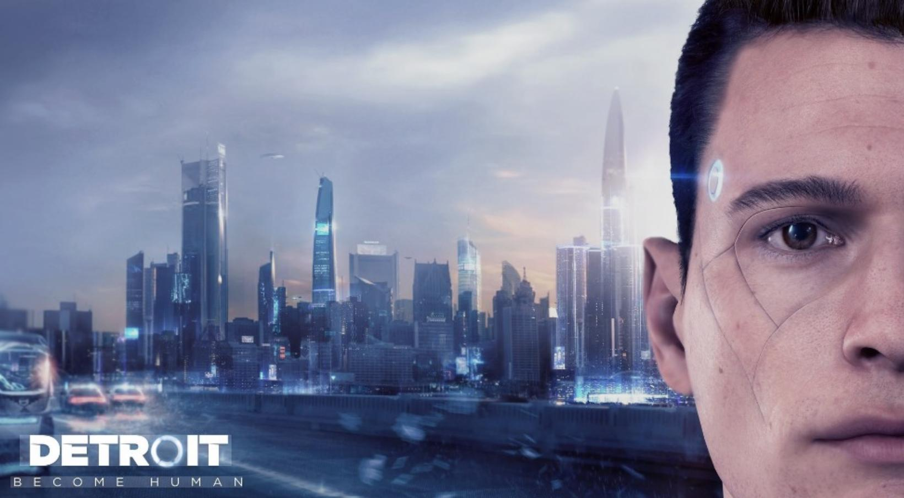
传统长视频采用线性叙事，用户即使产生判断、情绪或选择冲动，也无法干预剧情发展，只能被动接受结果。在强调参与与体验的内容环境中，这种单向输出逐渐显露不足。
评论和弹幕只能增强共鸣，无法影响剧情本身；选择式互动大多依赖固定 A/B/C 选项，预设分支有限，用户体验更像流程解锁，而不是自由参与。
当前视频仍以二维屏幕为主，视角固定，角色互动单向。VR 或 3D 内容又存在设备门槛、内容供给和自然交互问题，因此需要一种低门槛但高沉浸的中间形态。
互动视频要求分支剧情设计、开发能力和三维效果制作，直接导致内容供给不足，也让互动叙事难以进入大众创作场景。
在夜晚或周末的个人娱乐时间，用户打开一条标注为“可参与剧情”的视频。系统通过摄像头完成简单校准，画面呈现荒岛环境，角色开始与用户对话。用户可以直接说出自己的判断，例如优先寻找水源或生火，剧情也会随着表达发生变化。
随着故事推进，用户会通过头部移动观察被遮挡区域、确认线索，逐渐从观看者转变为参与者。系统记录其决策并影响结果，最终形成具有个人行为特征的结局。
用户完成一次互动后，可以将自己的结果分享到社交平台。不同用户会因为选择路径不同触发不同走向，甚至发现隐藏情节，讨论重点也从“剧情好不好看”转向“你是如何做出选择的”。
创作者可以把原有线性视频改造成互动版本，通过简单设置实现分支逻辑与多结局结构，使内容从一次性消费转变为可反复体验，从而提升停留时长与传播效率。
产品以“沉浸式互动视频 + 创作平台工具”为核心，将传统线性视频转变为可参与、可对话、可探索的动态叙事体验。用户不再通过点击选项影响剧情，而是以自然语言表达判断，并通过视角移动参与信息获取。
基于摄像头的三维视差系统识别用户眼部位置与视角变化，对画面进行实时调整。用户轻微侧头时，可以看到原本被遮挡的信息，主动发现线索。
AI 语音对话替代传统选项操作。用户与剧情角色自然交流，系统通过语音识别和大模型理解意图，生成符合角色设定的回应并推动剧情分支。
创作者通过流程图式工具搭建剧情结构，为节点设置触发条件，并通过图层化方式快速构建三维视差效果。AI 可辅助生成角色设定、对话和分支建议。
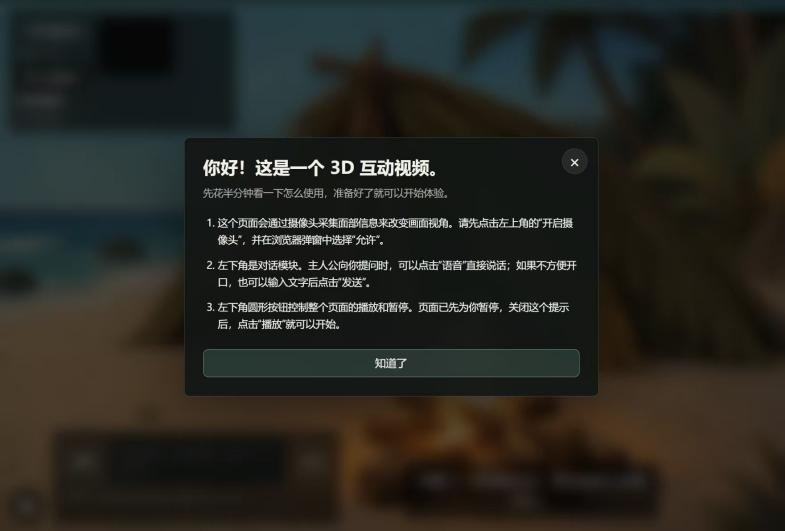
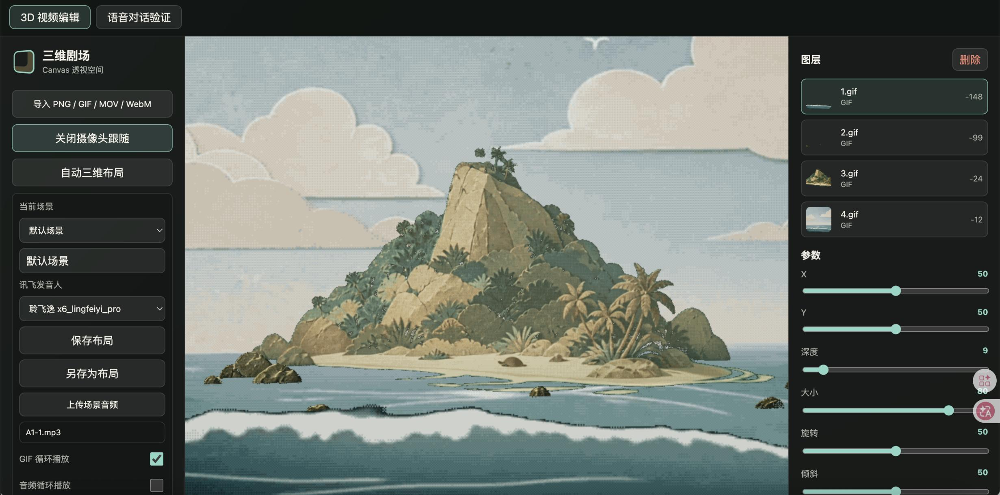
产品采用三层页面架构，从用户交互到底层服务实现清晰分工，并通过编辑页、演示页、最终页三种模式兼顾创作、体验与发布。

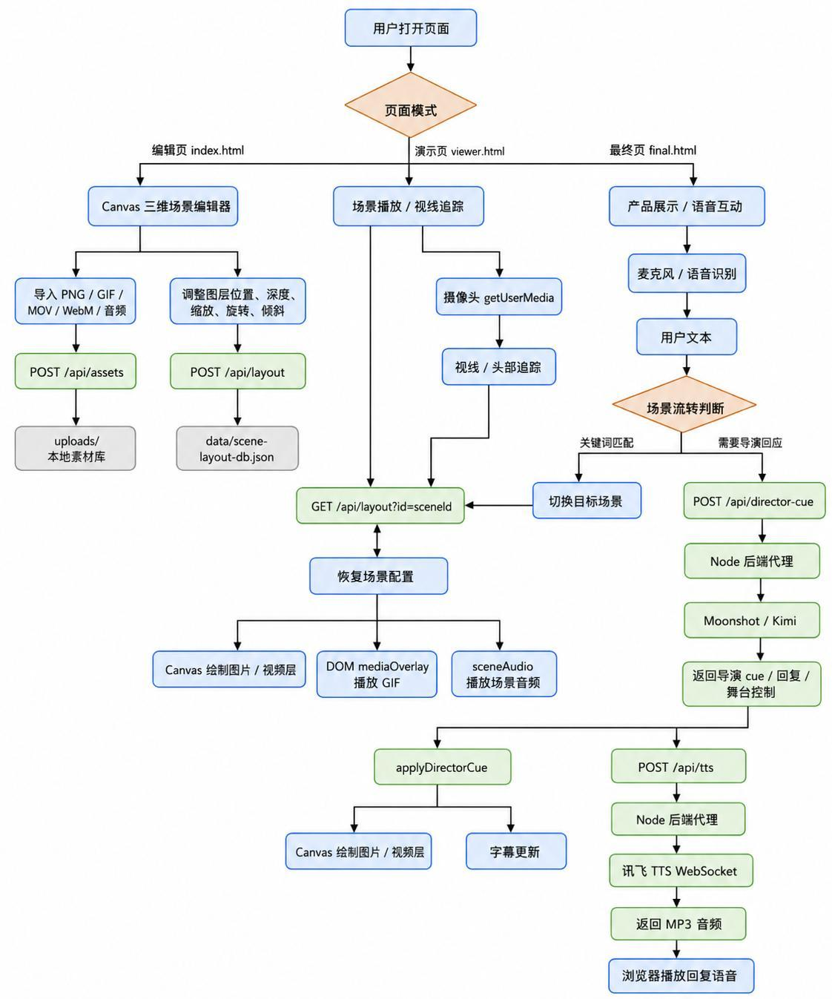
index.htmlPOST /api/assets 存入本地素材库。POST /api/layout 保存到 data/scene-layout-db.json。viewer.htmlgetUserMedia 调用摄像头，实现用户视线或头部追踪。GET /api/layout?id=sceneId 获取场景配置，并用 Canvas 和 DOM 媒体层恢复画面。final.html本方案的创新不只是技术叠加，而是重新定义视频叙事中用户的位置。用户既可以决定“做什么”，也可以通过视角变化决定“看什么”。
产品将传统的选项点击转变为自然语言表达，让用户从被动选择预设路径，转变为主动参与叙事过程。
用户不只影响行动，还可以通过视角变化参与信息获取。隐藏线索、场景细节和空间关系都可以成为叙事变量。
AI 的核心价值在于把开放语言和用户行为转化为剧情变量，让用户从不可干预的观看者变成能影响剧情的参与者。
系统通过 Moonshot/Kimi 大模型 API 理解用户语音转写文本，解析剧情决策、对话内容、情绪倾向和关键指令，触发场景跳转或角色交互指令。随后，Kimi 基于角色人设与剧情设定生成符合世界观的回复，并通过讯飞 TTS WebSocket API 转化为可播放语音，形成用户提问与角色实时回复的闭环。
将主线剧情输入 ChatGPT，由 AI 辅助生成分支剧情、主角人设 Prompt 与世界观设定，快速搭建多分支叙事框架。
手绘分镜草图搭配参考图，用 ChatGPT Image 2 生成统一画风的场景和角色素材；使用 TapNow / Seedance 生成视频，使用 Minimax Music 2.6 生成配乐。
基于开源三维项目，通过 Codex 自然语言开发完成 Canvas 三维场景编辑器、视线追踪功能，并接入 Kimi 与讯飞 TTS 搭建语音交互闭环。
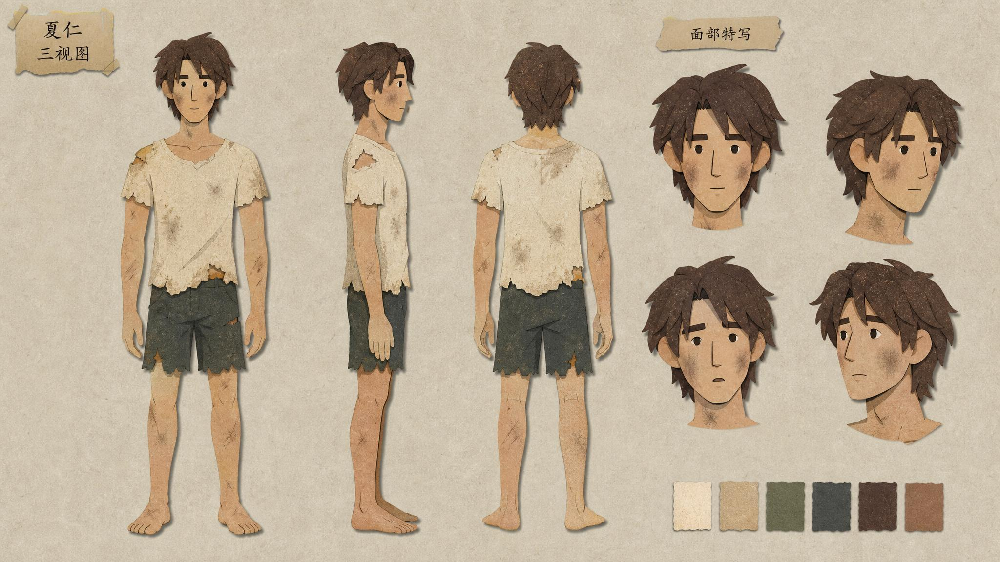
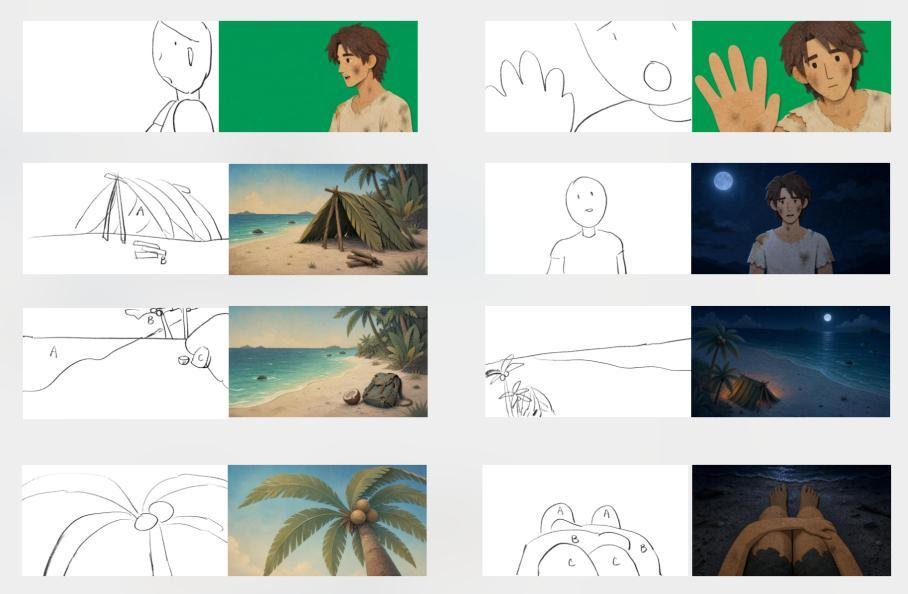
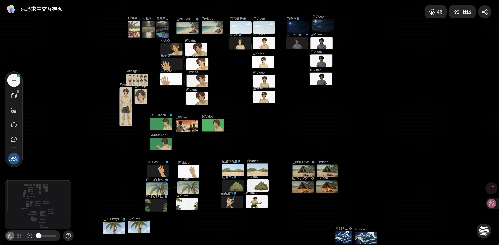
摄像头采集用户面部数据，实时追踪视线与头部位置，计算视差参数并驱动 Canvas 场景图层更新，实现随用户视角变化的透视效果。
用户语音转写为文本后发送至 Kimi/Moonshot API，AI 解析发言内容，匹配预设剧情逻辑，识别决策、情绪和关键指令。
大模型根据角色人设与剧情设定生成台词，讯飞 TTS 实时合成角色音色，浏览器播放音频，完成实时对话闭环。
项目以“先验证体验、再扩展供给”为路线：先通过互动视频 Demo 验证用户是否愿意以说话和行为参与剧情，再逐步强化 AI 叙事能力，最终开放创作平台。
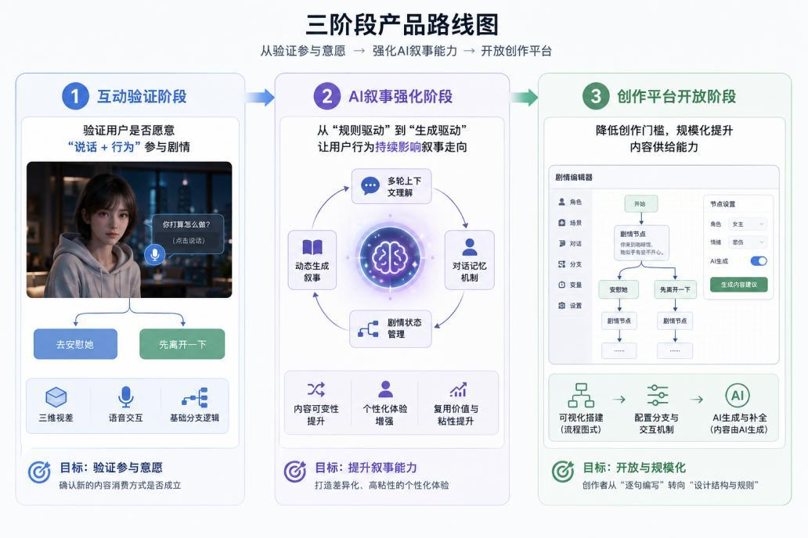
通过三维视差、语音交互与基础分支逻辑，验证用户是否愿意从观看转向参与。
引入剧情状态管理、对话记忆机制和多轮上下文理解，使用户行为持续影响叙事走向。
提供低门槛创作工具，让创作者以流程图方式构建剧情结构，并由 AI 承担内容生成与补全。
从技术角度看，三维视差与头部追踪可以基于现有前端技术实现，语音识别和语音合成已经成熟落地，大语言模型也为自然语言交互与动态内容生成提供了基础能力。核心挑战主要在交互延迟、叙事一致性和状态管理复杂度，属于工程优化问题。
产品的商业价值不只在单个互动视频变现，更在于构建新的内容生产与消费体系。互动视频体验负责吸引用户、验证需求，创作平台能力负责扩大供给、形成规模。
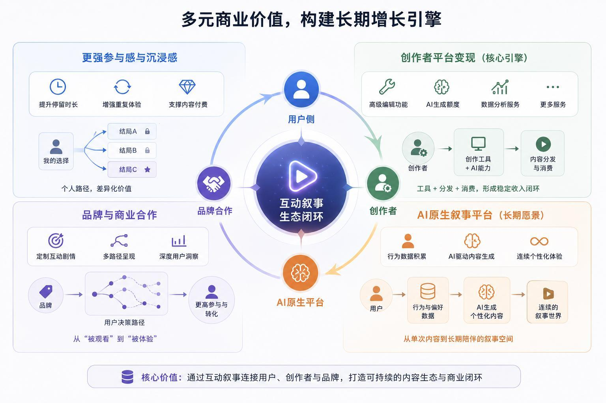
互动叙事内容具备更强参与感与沉浸感，可以提升停留时长和重复体验意愿，为高质量剧情付费、不同结局解锁等模式提供基础。
创作平台可以提供高级编辑功能、AI 生成额度、数据分析服务等稳定收入来源，形成视频编辑工具与 AI 创作工具结合的新形态。
品牌可以通过定制剧情，把产品或理念融入用户决策路径，让广告从被观看转变为被体验，并获得更细致的用户洞察。
随着用户在不同内容中的互动行为积累，选择路径与互动方式可以成为个性化数据基础，影响未来内容生成方向。
除原创互动叙事外，产品还可以对已有影视、短剧、动漫和 IP 内容进行 AI 互动化升级，激活老内容的二次生命周期。
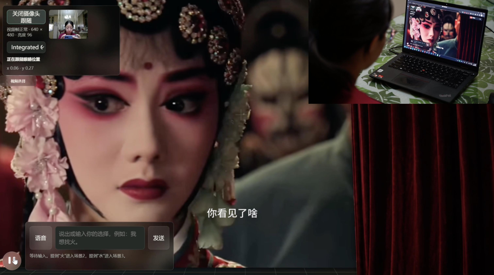
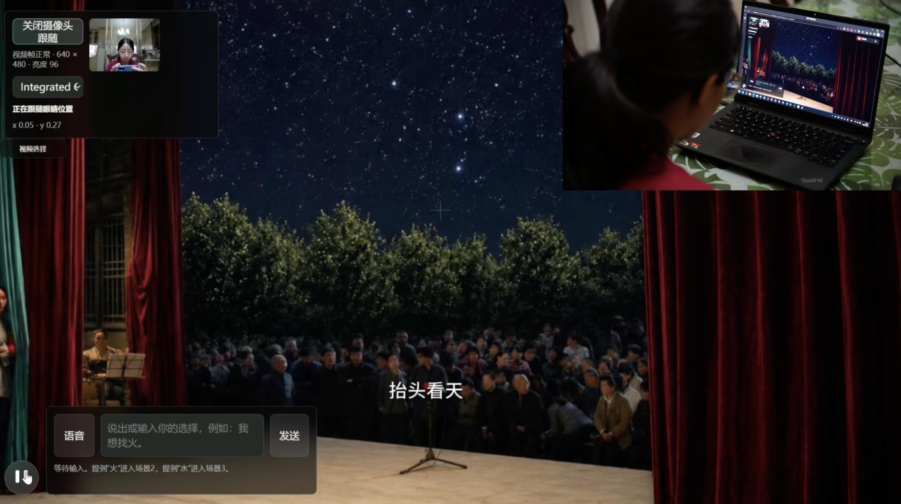
通过三维视差技术，原有二维视频可以被重新构建为空间化场景。悬疑内容中用户可主动观察环境，情感内容中用户可更近距离进入角色空间。
AI 语音交互让用户在关键节点与角色实时交流、提出建议，甚至触发不同结局。例如替角色解释、推进调查方向、改变遗憾结局或与角色建立互动关系。
互动化改造可以提升老内容复播率、停留时长与讨论度，同时沉淀用户行为数据，用于内容推荐、广告匹配和 IP 开发。
相比重新制作完整互动游戏，基于原有影视内容的互动化升级成本更低、效率更高，也更符合长视频与短视频平台的内容生产逻辑。